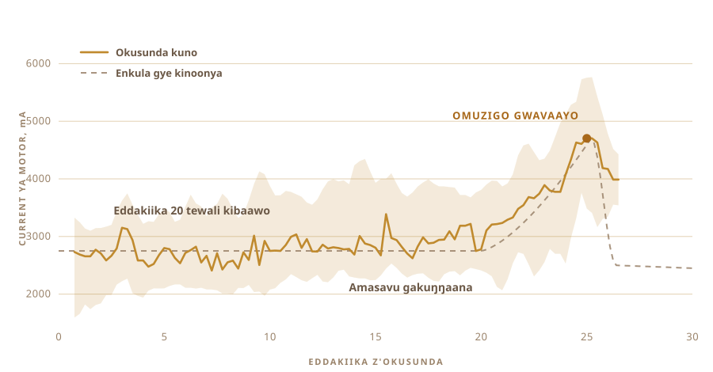

01
Nnamanya okugulya kwokka
Omuzigo tegwetaaga kunnyonnyolwa. Omanyi ensimbo. Omanyi n'omukono ogusunda amata okumala essaawa. Abahima n'abalunzi b'ente abalala bakoze ekintu kino emyaka n'emyaka, era omuzigo gwabwe gwaterekebwanga mu nsimbo.
Kye njagala okukubuulira kiri kirala. Omulimu ogwo nnagukwasa ekyuma. Ekyuma kyennyini kyazuula akadde k'okuyimirira.
Omuzigo gwe nnamanya gwava mu byalo by'e Nepal. Gwajjanga mu ccupa ezaalimu ebintu ebirala. Abantu abagukola eyo bagukola mu ngeri y'emu okuva edda, ne batakyagutwala nga mulimu gwa bukodyo. Gwe mulimu gwa bulijjo.
Omuzigo ogugulwa mu dduuka teguwooma bwe gutyo.
Naye nze saagukola wadde omulundi gumu. Saamanya amata galindirirwa bbanga ki, oba galina kuba manyogovu gatya, oba entamu erina kuwuuma eddoboozi ki nga ebintu bituukiridde.
02
Gutandikira ku mata agakutte, si ku kiriimu
Omuzigo ogw'amakolero gusookera ku kiriimu. Ggwe tosookera ku kiriimu. Osookera ku mata agalekebwa okukwata n'okulula, era ekyo kye kisinga obukulu mu byonna.
Bw'oggyawo okulula, ofuna amasavu g'amata agasengejjeddwa. Gawoomerera. Naye omuzigo gwennyini guba gwa njawulo.

03
Ennaku bbiri ku mmeeza
Amata agabuguma. Ekijiiko ky'amata g'eggulo agakutte, ng'okitabudde mu. Oluvannyuma ogaleka ekiro kyonna, obuwuka bukole omulimu gwabwo. Nze nnagaleka ku mmeeza ennaku bbiri.
Ekyo kwe kuzimbulukuka, era gwe mutendera amakolero gagubuuka. Obuwuka obulamu, obusinga nga bwa Lactobacillus, bulya lactose erimu ne bugifuula lactic acid. Amata gakwata. Gatandika okulula. Ku makya kiba kintu kirala.
Ebirungi byonna biva mu kitundu kino. Lactose emenyeka, kale omubiri gugigaaya bulungi. Amasavu ne proteins bifuuka byangu okufunwa. Ne butyric acid. Ge masavu ag'olukalala olumpi, olususu lw'ebyenda ge lukozesa. Mu muzigo ogukolebwa bwe guti, butyric acid ebeera nnyingi okusinga mu gwe bakuba mu kiriimu ekiwoomerera.
Mu Ayurveda, engeri eno yennyini gye balagira okuva edda n'edda.
Kye nsobola okukubuulira kiri nti akawoowo kava mu kulula. Akawoowo ako ke kaleetera omuntu okukkiriza okukola omulimu gwonna.

04
Enkola eno erina erinnya
Bilona. Ly'erinnya ly'enkola gye nnakozesa. Amata agakutte mu ntamu, omuti gusuulwa mu, oluvannyuma osunda eruuyi n'eruuyi okutuusa omuzigo lwe gukuŋŋaana ne guvaayo waggulu.
Okusunda amata kuleeta omuzigo. Ekyo kimanyiddwa. Enjawulo eri mu kintu ekisunda.
Ekisundo nnakikola nzennyini. Ebyo byonna bye nnasanga ku yintaneeti byali bigattiddwa na gaamu, so tewaali n'omu eyayagala okumbuulira gaamu ki. Ekintu ekyo kibeera mu mmere yo essaawa ekitundu. Saayagala kuteebereza. Omuti omukalubo, sikuluvu za stainless steel, era nnabinyweza ku muggo gw'ekyuma ogwali mu kabada.
Emikono ena, n'olukoba lw'ekyuma okugitereeza. Byonna sikuluvu, kale nsobola okukisumulula buli lwe njagala.


Kitwala essaawa nga ekitundu, era mu kitundu ekisinga tewali kigenda mu maaso. Gwe mulimu ogukuleetera okulowooza nti singa waliwo ekirala ekyandigukola.

05
Kyenva mbuuza
Abantu abamanyi omulimu guno tebakola ku byawandiikibwa, era tewaali n'omu ku bo mu ffumbiro lyange. Ebibuuzo byagenda mu ddirisa lya chat.
Amata galekebwa bbanga ki. Galina kuba manyogovu gatya. Omuti gusobola okwetooloola mangu ki nga tegunnaba kubuguza entamu n'okwonoona omuzigo. Buli ky'okuddamu kyazzaawo ebibuuzo bisatu birala.
Oluvannyuma nnabuuza ekibuuzo kye nnali njagala okubuuza okuva ku lubereberye. Osobola okugukola ggwe?
Ekibuuzo tekyali nti nkola omuzigo ntya. Kyafuuka nti osobola okugunkolera?
06
Ensolo
Cordless drill. Ekisundo ekyava mu kabada n'omu dduuka ly'ebyuma. Essanduuko ya pulasitiika ey'emmere, erimu electronics. Olubaawo olusalirako nga lwe lugongo. N'ebbatani eddene erya kyenvu ery'okuyimiriza, kuba buli kintu ekirina motor kirina kubeera na limu.
Tekyatwala ssente, era kirabika bwe kityo. Era ekyo tekinnuma.

- MotorCordless drill, nga enywezebbwa mu clamp
- EkisundoOmuti omukalubo ne stainless steel, nnakikola so saakigula
- ObwongoRaspberry Pi, nga awandiika omulundi gumu buli ssekonda
- OkuwuliraCurrent ya motor nga kisunda, probe y'ebbugumu nga kifumba
- OkuyimirizaEbbatani limu eddene, nga liyungibwa okusala amasannyalaze
07
Okusunda kwe kwangu
Buli muntu asobola okusunda amata. Ekizibu kiri mu kumanya akadde k'okuyimirira.
Bw'oyimiriza amangu nnyo, ofuna ejjovu lyokka. Bw'osunda ebbanga eriyitiridde, omuzigo gudda mu mazzi ne gubula. Akadde ako tekanywera. Kakyuka ng'amasavu bwe gali, ng'ebbugumu bwe liri, era ne nga olunaku bwe luli.
Tewali akozesa ssaawa. Owuliriza. Jjajjaawo yakimanya n'amatu. Eddoboozi liva ku kuwuuma okutereera ne lidda ku kukuba entamu nga tekwenkanankana, era olwo olwo oteeka omukono mu.

08
Okuwulira kumu kwokka
Kale nnakiwa okuwulira kumu kwokka. Kyetegereza amaanyi motor g'ekozesa.
Eddakiika 20, tewali kigenda mu maaso. Omugugu gubeera okumpi ne 2700 mA, nga gutambulatambula katono. Oluvannyuma amasavu gatandika okukuŋŋaana, ne drill eteekwa okusindika mu kintu ekizibu. Omugugu gulinnya okutuuka ku 4700, gusigalawo akadde katono, oluvannyuma omuzigo guta amazzi ne gugwa.
Tewali kamera, tewali model, tewali magezi maggya. Namba emu egenda waggulu n'oluvannyuma n'ekka.

09
Kyayimirira kyokka
Kyakola. Nze nnagenda mu mulimu omulala. Bwe nnakomawo nnasanga nga kizikidde.
Obutundutundu bwa kyenvu okumpi n'omweru nga buseeyeeya mu mazzi ameeru. Tewali eyakibuulira ssaawa. Kyazuula akadde mu kintu kimu kyokka kye kisobola okuwulira.

10
Oluvannyuma, emikono nate
Okuŋŋaanya obutundutundu n'okubunyiga bwonna ne bufuuka kimu. Okunaaza mu mazzi amannyogovu, emirundi n'emirundi, okutuusa amazzi lwe gatandika okuvaamu nga gatangaavu.
Buli ttondo ly'amazzi lye waleka lijja kusiriira mu mutendera oguddako. Ekitundu kino saakiwa kyuma, era saayagala kukiwa kyuma.


11
Okuwulira okwokubiri
Omugugu gwa motor gwe gwabuulira ekyuma akadde k'okuyimirira. Okufumba kwe kuzibu kw'engeri endala. Kaakano tonoonya kadde. Ogezaako okukuuma ebbugumu nga teritambula.
Kale entamu eteekebwa ku hotplate, nga erimu probe y'ebbugumu, era AC regulator ezikiza n'ekoleeza hotplate okukuuma namba we wagissa. Nnagissa ku 250 F, era yasigala awo nga essaawa emu.
Omuntu bw'akuuma entamu okumala essaawa emu, ebirowoozo bye bigenda awalala. Regulator tekoowa.

12
Essaawa emu ng'otunuulira langi
Omuzigo omuto mu ntamu. Oluvannyuma, kigenda kyokka.
Gusaanuuka. Guyimusa ejjovu eryeru n'eddoboozi eddene. Amazzi gakalira, eddoboozi ne lifa. Ebisigalira by'amata bikka wansi ne bifuuka bbulawuni, n'akawoowo kava ku muzigo okudda ku kintu ekyokebwa. Entamu bw'esirika, n'omuzigo bwe gutangaalira, guweze.
Nnatunuulira ekitundu ekisinga wadde nga tekyali kyetaagisa, kuba kirungi okutunuulira. Naye tewali kye nnakola ekyakyusa engeri gye gwavaamu.


13
Omuzigo
Mutangaavu, gwa langi ya zzaabu, era akawoowo kaagwo nga ka ccupa ze nnalyangako nga nkyali omuto. Ekyo kyali kigezo kyokka kye nnalina, era gwakiyita.

Nnagussa mu ccupa nga gukyali gubuguma era mutangaavu. Enkeera gwali gukutte, gwa kyenvu okumpi n'omweru era nga gulimu empeke entonotono.
Nnateeka ekipande ku zo. Ekigambo ekiri ku kyo kye kigambo ky'omu Nepal ekitegeeza omuzigo, ne koodi eri ku mabbali ekuzza ku lupapula luno.

Gwe mulundi gwange ogusooka. Naye bwe wandiibuuza, nze saagukola.
14
Eccupa mwenda omulundi ogwokubiri
Omulundi ogusooka gwavaamu ccupa bbiri, era ezo zaali zonna. Guno gwajjuza olubaawo lwonna.
Eccupa mwenda. Bbiri empanvu ez'ebisaanikira ebizingibwa okumpi ne kamera, mukaaga ez'ebisaanikira ebikwata wakati, n'entono emu ku mpagi eri ewala.

Ekipande kaakano kya njawulo. Eccupa bbiri ezisooka zaalina ekya lupapula lwa pinki, nga waggulu kuliko OUR STORY. Zino za film entangaavu, kale omuzigo gulabika emabega w'ennukuta, ne koodi eri ku mabbali ekyakuzza ku lupapula luno.


Gwakwata nga gwa kyenvu okumpi n'omweru, nga bwe kyali ku mulundi ogusooka. Nnali sikakasa nti kijja kubeera bwe kityo.
15
Kye njagala okuddako
Kaakano ekyuma kimanyi bintu bibiri. Akadde k'okuyimiriza okusunda, n'ebbugumu lye lirina okukuuma.
Njagala kukiwa amaaso n'amatu. Kamera, kisobole okulaba ejjovu lwe lifa n'ebisigalira lwe bifuuka bbulawuni, era kyeroboze ebbugumu kyennyini, mu kifo ky'okukwata namba gye nnakiwa. Ne maayikolofooni, kuba ebingi ebikubuulira nti omuzigo guweze biva mu ntamu okusirika.
Drill eyinza okukola n'omulimu omulala. Omuzigo bwe guba mu ntamu gwetaaga okutabulwa, ate eriyo motor etudde awo nga tekola kantu.
Oluvannyuma, okuddamu okuddamu. Kyusa ebbanga ly'okulula. Kyusa sipiidi. Lega ekivuddemu. Kuuma ekikoze. Ddamu okutandika. Singa kikola emirundi 30, kyandituuse mu kifo kye sandirowoozaako kutunulamu.
Nze ddala saamanyanga wa kutunula.
Kyakolebwa ku ki, okupima kukolebwa wa, era ekyuma ddala kyetegereza ki.